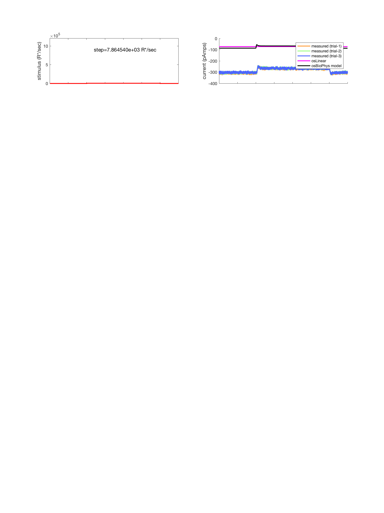
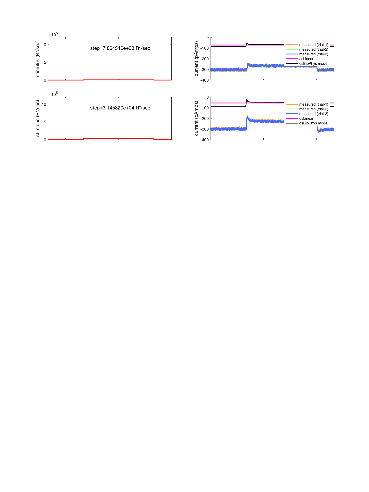
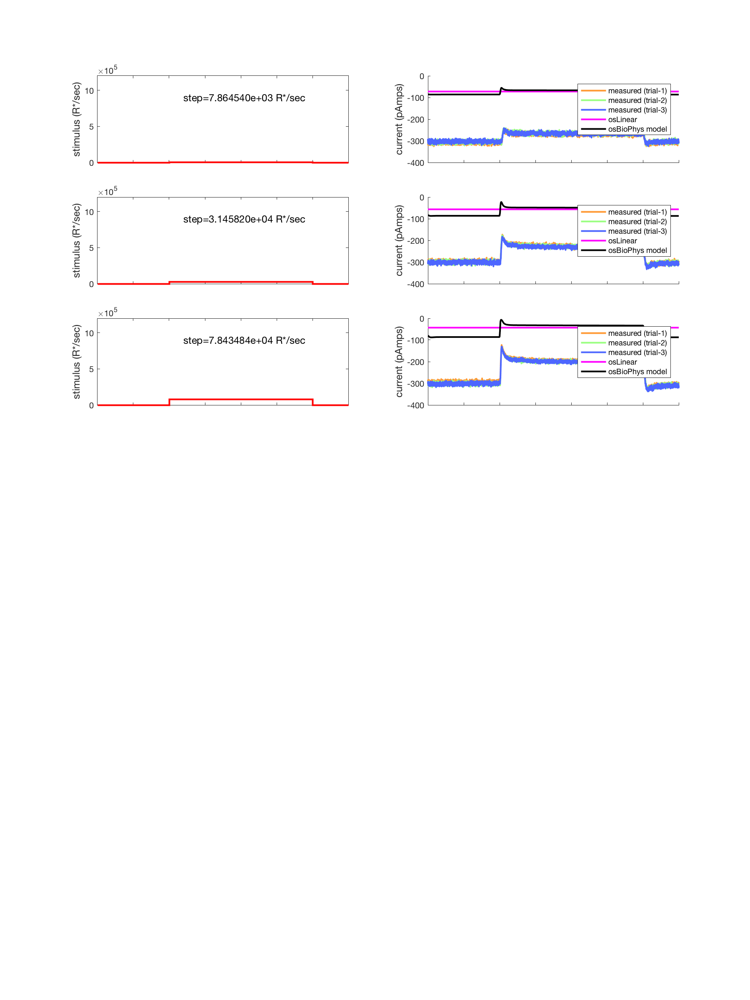
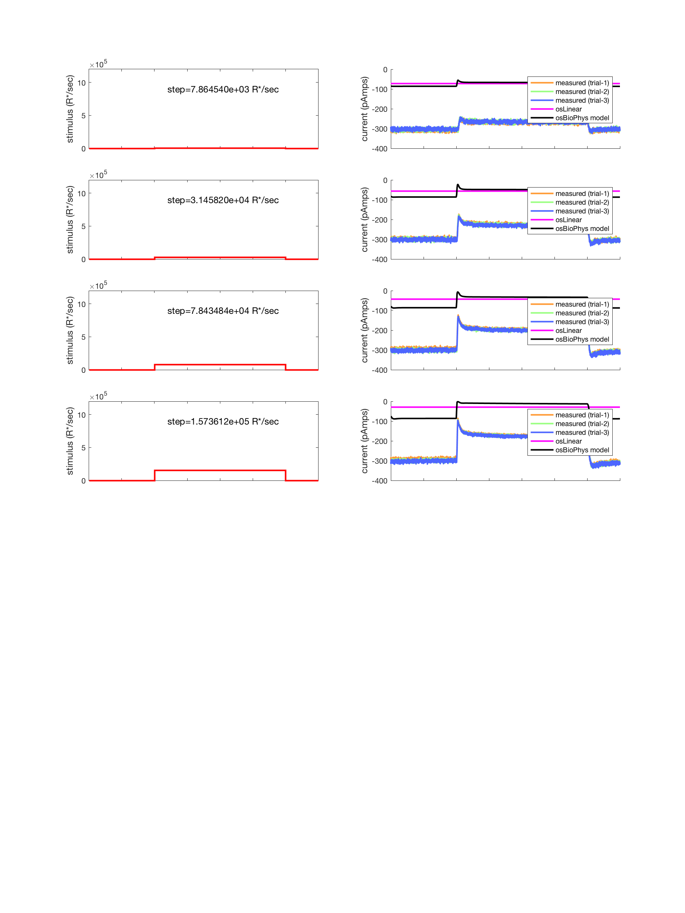
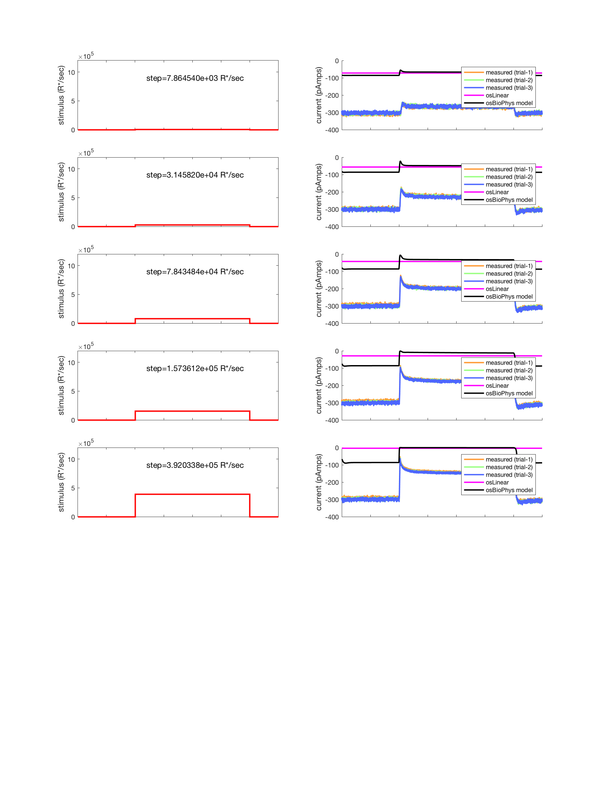
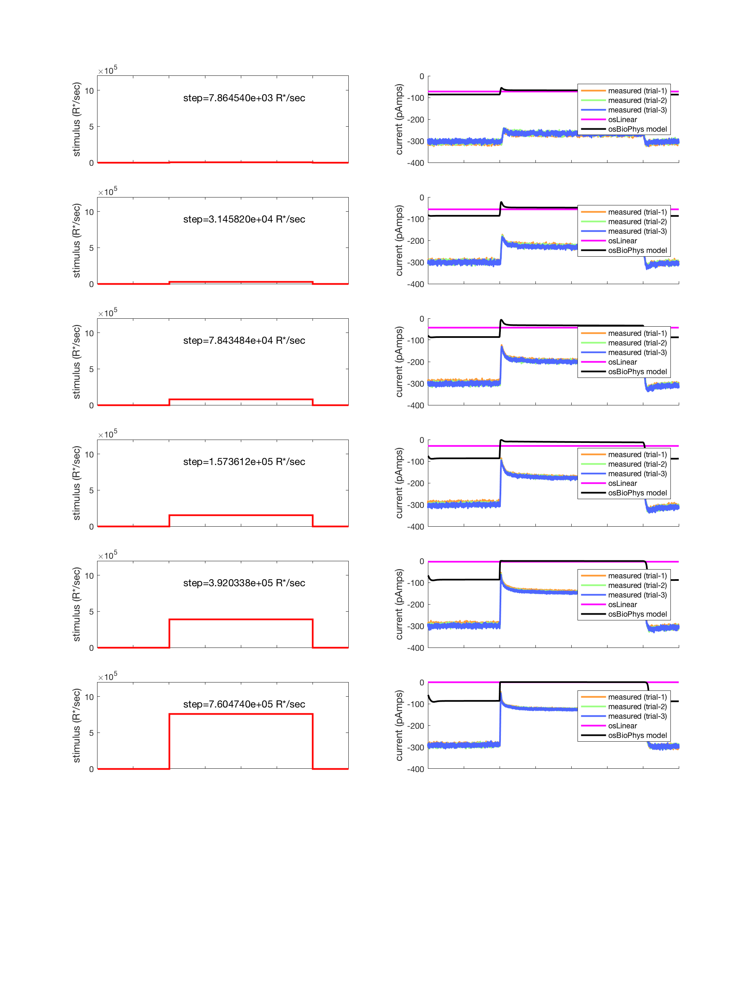
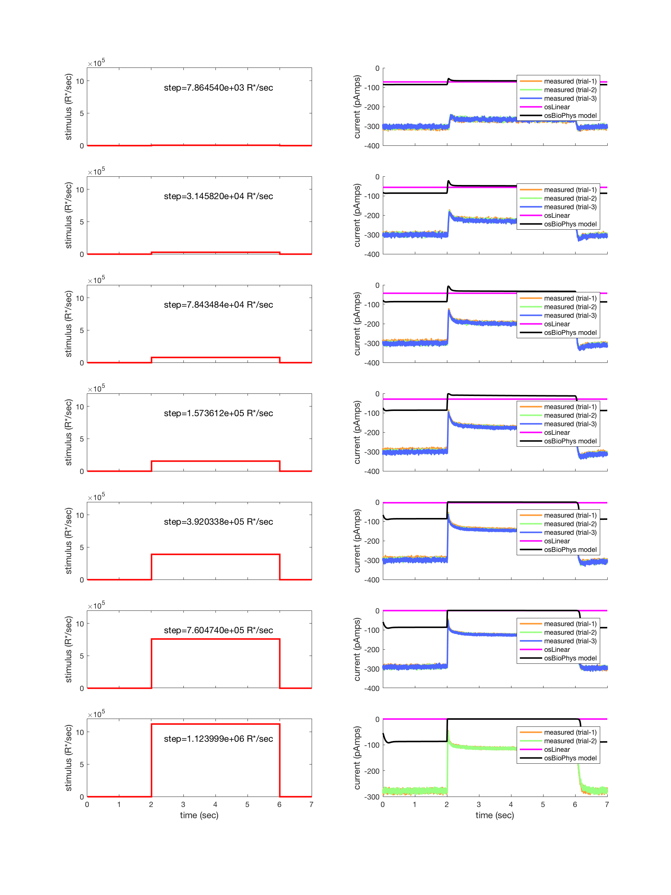

Contents
function varargout = v_osStep(varargin) % % Validate the cone outer segment models against neural data (step stimuli) % % This script tests the linear and biophysical outer segment models of % photon isomerizations to photocurrent transduction that occurs in the % cone outer segments, for recordings of response to light steps of % different sizes. % % STATUS as of 2/10/16: Fetes stepExample data file using % RemoteDataToolbox. The data from the file are at about -300 pA in % advance of the stimulus, while the model baseline is (reasonably) at % about -85 pA. The actual sizes of the step responses also diverge from % the data, with the size of the data steps getting bigger and bigger, but % with the model (reasonably) maxing out when the current reaches 0 pA. We % don't understand the offset in the data, nor the relation between the % measured step size and model step sizes. Indeed if the data where shifted to % a baseline of about -85 pA then the response (about 200 pA) is too big to % be possible. % % 1/12/16 npc Created after separating the relevant % components from s_coneAdaptNoise. % 11/17/2016 jrg Converted to cone mosaic, incorporated both linear and % biophysical os models. varargout = UnitTest.runValidationRun(@ValidationFunction, nargout, varargin); end
Function implementing the isetbio validation code
function ValidationFunction(runTimeParams)
Init
ieInit;
Load measured outer segment data
[time, measuredOuterSegmentCurrents, stimulusPhotonRates] = loadMeasuredOuterSegmentResponses();
% Set the simulation time interval equal to the temporal sampling resolution of the measured measured data
% In general, the stimulation time interval should be set to a small enough value so as to avoid overflow errors.
upsamplingFactor = 1;
simulationTimeIntervalInSeconds = (time(2)-time(1))/upsamplingFactor;
simulationTime = time(1):simulationTimeIntervalInSeconds:time(end);
nSamples = numel(simulationTime);
pulseOnset = 40001;
pulseOffset = 120000;
Compute os responses
for stepIndex = 1:numel(stimulusPhotonRates)
% retrieve the measured currents for the examined step size measuredCurrents = measuredOuterSegmentCurrents{stepIndex}; % retrieve the examined stimulus amplitude (photons/sec) stimulusPhotonRateAmplitude = stimulusPhotonRates{stepIndex}; % start and end time of the light stimPeriod = [pulseOnset pulseOffset]*upsamplingFactor; % create stimulus temporal profile stimulusPhotonRate = zeros(nSamples, 1); stimulusPhotonRate(stimPeriod(1):stimPeriod(2)) = stimulusPhotonRateAmplitude;
Linear model
osCML = osLinear();
osCML.set('noise flag','none');
cmL = coneMosaic('os',osCML,'pattern', 2); % a single cone
cmL.integrationTime = simulationTimeIntervalInSeconds;
cmL.os.timeStep = simulationTimeIntervalInSeconds;
cmL.absorptions = reshape(stimulusPhotonRate,[1,1,length(stimulusPhotonRate)])*simulationTimeIntervalInSeconds;
% Compute outer segment currents.
cmL.computeCurrent();
currentL = (cmL.current);
No current noise added.
No current noise added.
No current noise added.
No current noise added.
No current noise added.
No current noise added.
No current noise added.
Biophys model
osCM = osBioPhys(); % peripheral (fast) cone dynamics osCM.set('noise flag','none'); cm = coneMosaic('os',osCM,'pattern', 2); % a single cone cm.integrationTime = simulationTimeIntervalInSeconds; cm.os.timeStep = simulationTimeIntervalInSeconds; cm.absorptions = reshape(stimulusPhotonRate,[1,1,length(stimulusPhotonRate)])*simulationTimeIntervalInSeconds; % Compute outer segment currents. cm.computeCurrent(); current = (cm.current);
Plot responses
store copy for saving to validation file
if (stepIndex == 1) osLinearOuterSegmentCurrent = zeros(numel(stimulusPhotonRates), size(currentL,3)); osBiophysOuterSegmentCurrent = zeros(numel(stimulusPhotonRates), size(current,3)); end osLinearOuterSegmentCurrent(stepIndex,:) = squeeze(currentL(1,1,:)); osBiophysOuterSegmentCurrent(stepIndex,:) = squeeze(current(1,1,:)); % plot model and measured data and stimulus if (runTimeParams.generatePlots) if (stepIndex == 1) h = figure(1); clf; set(h, 'Position', [10 10 900 1200]); end % plot stimulus on the left subplot(numel(stimulusPhotonRates),2,(stepIndex-1)*2+1); stairs(simulationTime, stimulusPhotonRate, 'r-', 'LineWidth', 2.0); set(gca, 'YLim', [0 12e5]); if (stepIndex == numel(stimulusPhotonRates)) xlabel('time (sec)','FontSize',12); else set(gca, 'XTickLabel', {}); end ylabel('stimulus (R*/sec)','FontSize',12); text(2.4, 9e5, sprintf('step=%d R*/sec',stimulusPhotonRateAmplitude), 'FontSize',12); % plot responses on the right subplot(numel(stimulusPhotonRates),2,(stepIndex-1)*2+2); hold on; trialColors = [... 1.0 0.6 0.2; ... 0.6 1.0 0.5; ... 0.3 0.4 1.0; ... 0.9 0.2 1.0 ... ]; % plot individual trial measured currents offset for trial = 1:size(measuredCurrents,1) measuredOuterSegmentCurrent = squeeze(measuredCurrents(trial,:)); plot(time, measuredOuterSegmentCurrent, '-', 'Color', squeeze(trialColors(trial,:)), 'LineWidth', 2.0); end % plot computed current plot(simulationTime, squeeze(osLinearOuterSegmentCurrent(stepIndex,:)), 'm-', 'LineWidth', 2.0); hold on; plot(simulationTime, squeeze(osBiophysOuterSegmentCurrent(stepIndex,:)), 'k-', 'LineWidth', 2.0); if (stepIndex == numel(stimulusPhotonRates)) xlabel('time (sec)','FontSize',12); else set(gca, 'XTickLabel', {}); end %set(gca, 'YLim', [-150 0]); ylabel('current (pAmps)','FontSize',12); if (size(measuredCurrents,1) == 1) legend('measured (trial-1)', 'osLinear', 'osBioPhys model'); elseif (size(measuredCurrents,1) == 2) legend('measured (trial-1)', 'measured (trial-2)', 'osLinear', 'osBioPhys model'); elseif (size(measuredCurrents,1) == 3) legend('measured (trial-1)', 'measured (trial-2)', 'measured (trial-3)', 'osLinear', 'osBioPhys model'); end % if (stepIndex == numel(stimulusPhotonRates)) % NicePlot.exportFigToPNG('PulseTests2.png', h, 300); % end end      
end % stepIndex
Save validation data
UnitTest.validationData('osBiophysCurrent', osBiophysOuterSegmentCurrent); UnitTest.validationData('simulationTime', simulationTime); UnitTest.validationData('stimPeriod', stimPeriod); UnitTest.validationData('stimulusPhotonRates', stimulusPhotonRates);
end
Helper functions
function [time, measuredOuterSegmentCurrents, stimulusPhotonRates] = loadMeasuredOuterSegmentResponses() dataSource = {'resources/data/cones', 'stepExample'}; fprintf('Fetching remote data: dir=''%s'' file=''%s''. Please wait ...\n', dataSource{1}, dataSource{2}); % Download neural data from isetbio's repository client = RdtClient('isetbio'); client.crp(dataSource{1}); [stepExample, stepExampleArtifact] = client.readArtifact(dataSource{2}, 'type', 'mat'); fprintf('Done fetching data.\n'); % stimulus in isomerizations/sec stimulusPhotonRates = stepExample.data.lightLevel; % measured outer segment currents measuredOuterSegmentCurrents = stepExample.data.Data; % time axis time = (1:size(measuredOuterSegmentCurrents{1},2))*stepExample.data.samplingInterval; end
Fetching remote data: dir='resources/data/cones' file='stepExample'. Please wait ... Done fetching data.